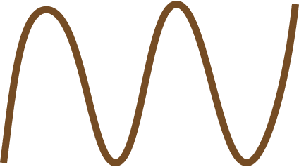
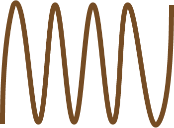
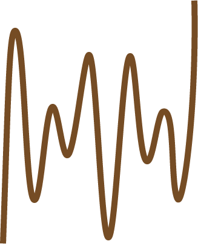

吹直笛打電話？重現柯南名場景！
Yu-Hsun Lee
@PyCon TW 2021

名偵探柯南－戰慄的樂譜 (2008)
數學建模黑客松
你們似乎已經抵達出⼝附近，但是依然有碎石擋住，
確認你們的位置後，調查團會⽤⼯具打通⼀條通路，
不過因為⽬前遺跡構造不穩，不能隨意開挖，
只能等你們提供所在位置後才能打通。
因為遺跡內不穩，所以⾏為都可能導致崩塌，
不要⼤聲呼叫、拍打，
請⽤其他的⽅式，設法通知調查團你們的所在位置。

| 1209 Hz | 13366 Hz | 1477 Hz | |
|---|---|---|---|
| 697 Hz | 1 | 2 | 3 |
| 770 Hz | 4 | 5 | 6 |
| 852 Hz | 7 | 8 | 9 |
| 941 Hz | * | 0 | # |
雙音多頻訊號
Dual-Tone Multi-Frequency, DTMF

低頻

高頻
